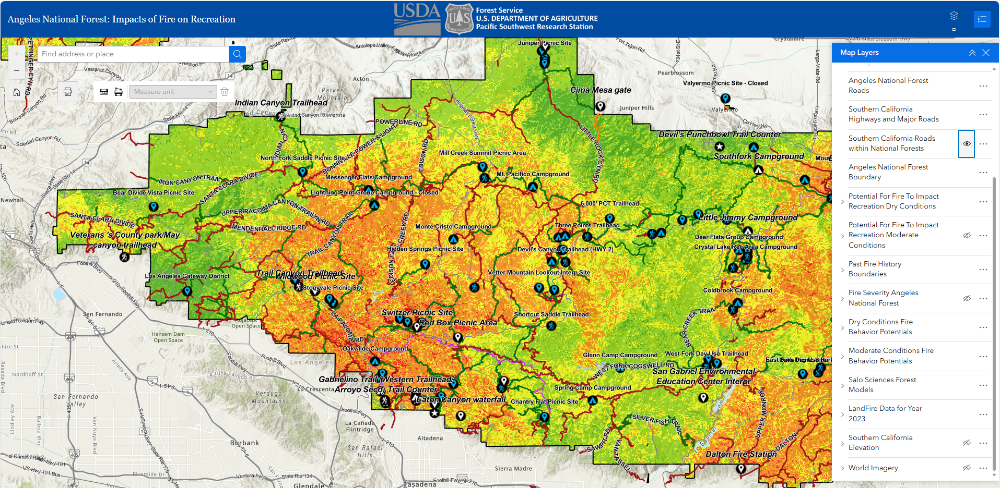
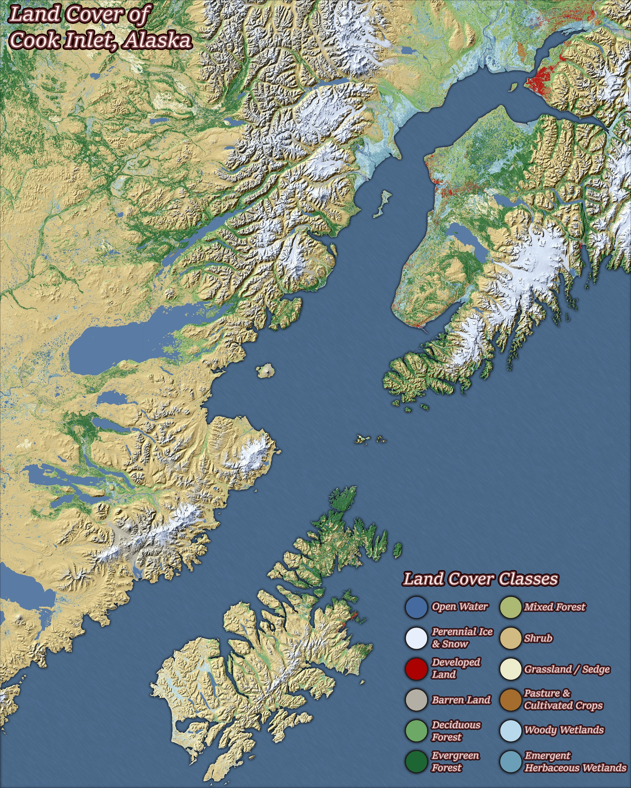
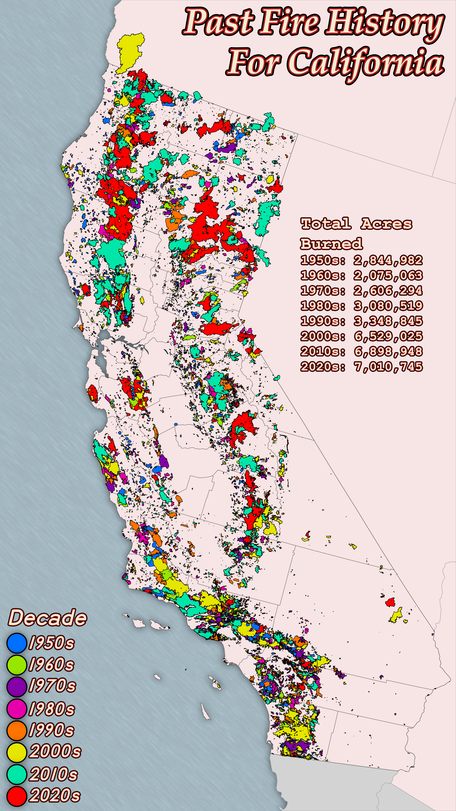
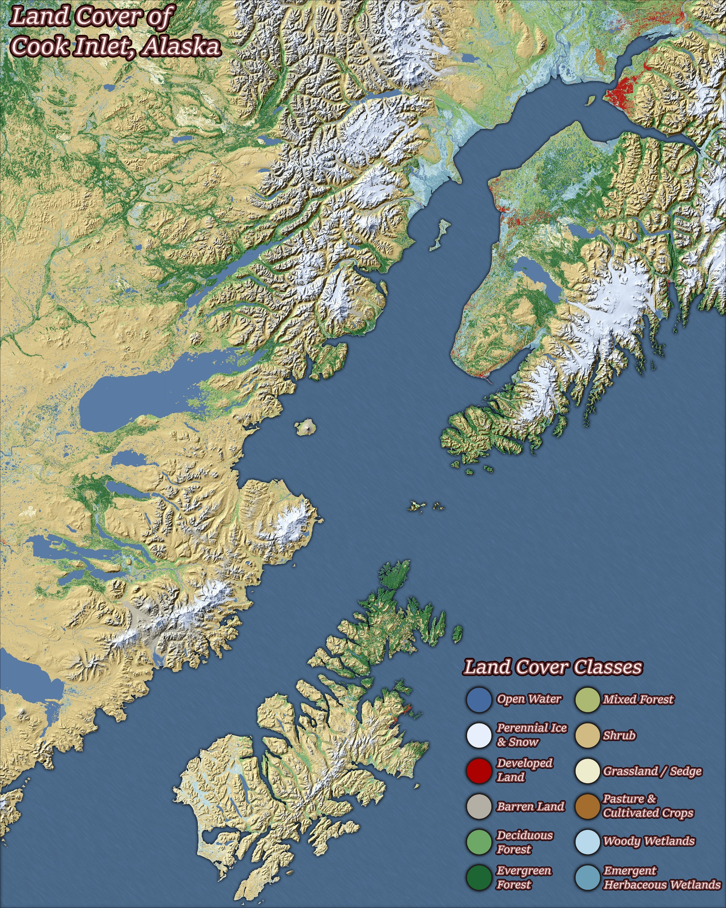
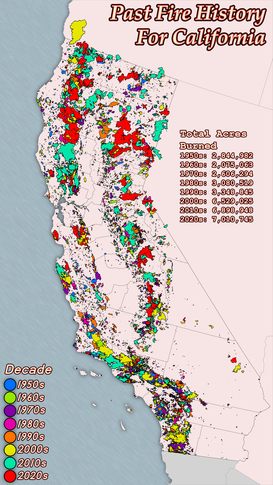

Fire Ecology Research Fellow (ORISE funding by USFS)

I developed GIS models to assess the potential impact of wildfires on recreational areas within all four National Forests in Southern California. To understand the potential for fire to displace recreation, I modeled recreation displacement likelihood under two weather scenarios: dry and moderate conditions. The models incorporated spatial data inputs including canopy height, flame length probability, heat per unit area, burn probability, and fire severity to evaluate wildfire intensity and potential impact. This work supports forest management and safety planning efforts and was recognized with a Chief’s Award for its contribution.
PDF Example
 


